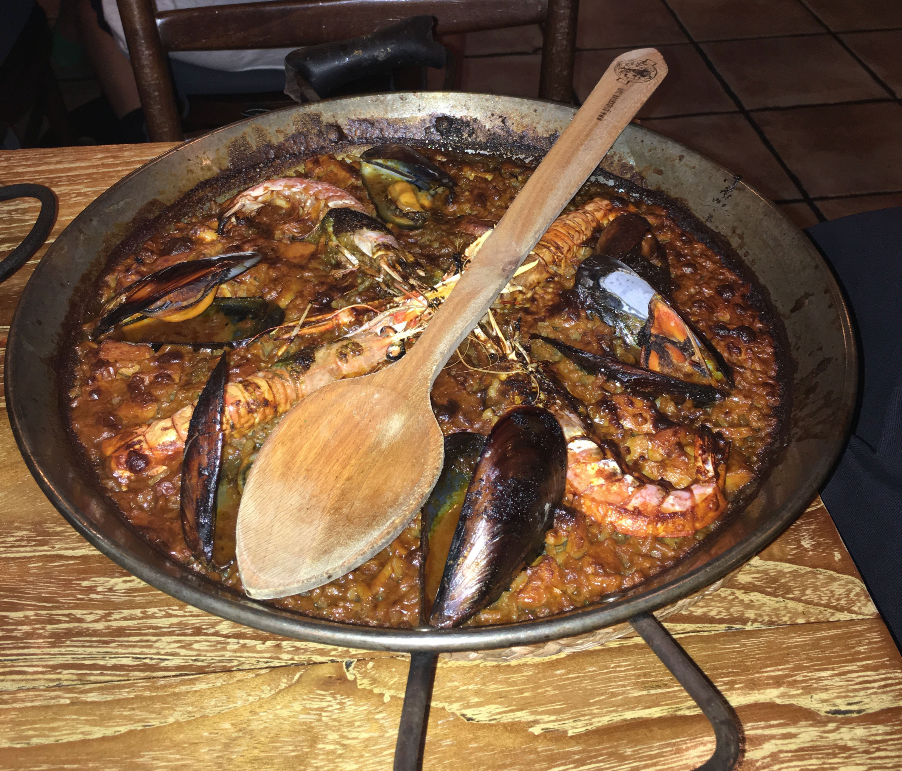

Places I Visited
Barcelona
Valencia
Madrid
Food I Ate
Patatas Bravas
Mussels
Sangria
Paella
Iberian Ham
Cured Meats
Gambas a la Plancha
Bocadillos
Calamares a la Romana

My Favorite Memories
Riding Through the Barcelona
In all honesty, when Marcella, Quinn and I all hang out, we usually do not tend to do physical activities. So, when Quinn suggested that we went on a bike tour of Barcelona, I was honetly shocked. Marcella and I were not super sold on the idea, but eventually we folded and bought a ticket, and thank goodness we did. This tour was like nothing I had ever done on a trip before and I had significantly more fun than I ever expected. When traveling, it is easy to get caught up in being a tourist, creating scenarios where it is a lot of walking around to different attractions and "tourists spots," combined with some pictues taking and looking around. By changing the game and riding around the city of Barcelona it allowed us to see the city in a different way, and made it feel like we were more ingrained in the city. To make the expereince even better, the people that we meant on the tour were so freindly, and we were able to talk with a few of them at the different stops and when we stopped to eat lunchh, which was included. That whole day was a great first start to our trip in Spain.
I'm on a Boat
Since we were planning our vacation on our own, we kind of just made decisions in the moment, leaving us without concrete plans a lot of the time. Once we realized this was our reality, we scrambled to put together some plans. One thing that we could all agree on is that we wanted to get on a boat, and somehow we managed to do it. On some travel website we boat "tickets" onto a midday boat ride. That morning we showed up at the Marina and started looking around for any sign of our boat. We thought we had found it when we saw a group of people waiting near a gate and a lady in an official polo showed up. We soon realized we were not actually meant to be with that group, and our boat was somewhere else. Starting to get a little concerned, we saw a man in plain clothes come up to us, claiming to be our ride for the day. Was it our smartest decision to go our into the middle of the ocean with a random man on his boat, no, probably not, but inevtiably i'm glad we did since it was another great day. The man was on the boat with his wife, two daughters, a traveler who ws working with him while he was stopped in Barcelona, and there was another couple doing the same were. The boat ride was amazing, allowing us to just relax, tan, and drink champagne. It also allowed us to talk with loals and share storeis, experiences, and advice. After that day we considered getting tickets for another boat ride, but we decided in the end not to try and beat the expereince.
Underdressed
While on our bike tour, one of the stops we made was in front of La Sagrada Familia, a beautiful church, designed by the renowned architect Gaudi, that has been under construction since 1882. The outside is an intricate masterpiece, beautifully designed, which is all we got to see on our first tour. That is when our bike tour guide informed us that we could buy tickets to be able to enter inside, and it would garuntee us a specific time to be allowed to enter. Without putting too much thought into it, we bought tickets for a few hours after our boat tour. When we showed up to the church for our designated time, we were a little wet and salty from our quick swim in the ocean. Since it was summer, and we were on vacation, we were all wearing cute outfits, but that does not necessarily mean they were appropriate for everything. Waiting outside, we were told that we would not be allowed to enter into the church since our shoulders were exposed. We definetly weren't the only ones to ever make this mistake, because there are people outside selling shawls and scarves for those that don't think before getting dressed while on vacation. Not wanted to spend a few euros on this cheaply made pieces of fabric, that we would likely never use again, we made the decision to use our damp towels to cover up for the day. The sight of the three of us walking around an architecutual masterpiece, and a place of worship, in our dirty towels was definetly a sight to see, but in the moment we thought we were geniuses. Next time we will be sure to be a little more careful with our fashion choices.
Fine Dining
It's no surprise to me that one of the best parts of the trip was all the food we got to eat. When we got to Valencia, we had already completed all of our preplanned activities, so we were just seeing where the days took us. For our first, and only full day in the city, we made the plan to visit The Central Market of Valencia right by our apartment, and then go to the beach. Once at the market, we started walking around, discovering all the yummy foods we could find. Collectively Marcella, Quinn, and I like meat and cheese more than any other people I know, so this market was a dream. Along with all the fruits, fresh fish, and wines being sold, there was an abundance of meat and cheese. In that moment we knew what we had to do; we were going to put together our own little picnic. We bought a bunch of meat, like Iberian Ham (which is the absolute best), cheese, bread, and wine. Originally we planend to take our picnic to the beach, but we decided we couldn't wait that long so we decided to eat in our apartment. Everything tasted amazing, leaving us satisfied with our decision of eating charcuterie for lunch that day, which was not that different than every other meal we had on this trip. Except time we got to make it ourselves.
"I wanted the whole pitcher..."
After a successful trip to the Central Market in Valencia, when we realized that there was another marketplace in Madrid, we were pumped. One day we ventured over to El Mercado de San Miguel. We expected it to be similar to the Central Market, bt we were most definetly wrong. While the Central Market offered a bunch of different produce and simplier foods, El Mercado de San Miguel was full of different stands where we could get prepared foods. Overwhelmed by the whole thing, we just started buying tapas as we saw things that interested us. One of the things we knew we had to buy was a cone full of meat, which grabbed our eyes immediately. There were also a stand that I hit up many times, MOZHEART, where I got a bunch of mozzerella. Another essential for us was the sangria stand. Once we were satisfied with our time at the market, we were left with little ideas on what we wanted to do for the rest of the day. Since Madrid is not on the coast like Barcelona and Valencia, we were feeling the heat of mid summer. We saw a restraunt next to the market, and decided to stop in for a few drinks. We knew that we were going to stay there for a while, so I orded a full pitcher of sangria, which I planned on sipping on for a few hours. When our waited came out with just a single glass on sangria, he noticed that I was upset, and asked what was wrong. I then explained that I ordered a whole pitcher, and he quickly apologized and thought I made a mistake in ordering a while pitcher when everyone else at the table also ordered there own drinks. He then brought my pitcher, which happened to be a whole watering can, but also let me keep the first cup he brought. Inevitably we stayed for hours, allowing me to finish my whole pitcher, plus another sangria they gave us a gift, and a shot of sometihng since we stayed for so long. We were there for so long that we became friends with the waiters, and ended up buying food since we started getting hungry again, patatas bravas of course. Overall, it was a great day of us just hanging out and escaping the heat.
Aperol Spritz, not Aperol
When I was in Italy the summer before, I discovered my love for Aperol Spritz. The drink was nice and refreshing, making it the perfect summer drink. After our paella dinner one night in Valencia, we decided to head over to yet another market, el Mercado de Colon. This market place was mostly full of different restaurants, since we had already had dinner, we did not really need anymore food. Instead, we discovered one of the restaurants had a bar outside, and we decided that would be a good place to sit for the night. Everyone was looking over the menu, and I noticed that aperol was on the menu adn I was stoked. I excitedly ordered one, anticipating my refreshing drink that I had discovered a year ago. When the waiter brought over my drink I took my first sip right away and was immediately taken aback with the strong, bitter taste in my mouth. It was definetly not the same drink. When I looked at the menu, I quickly realized that Aperol is just the type of liquor, and without proseco and soda water, the drink is very very differeent. Disappointed, I continued to sip on the drink which I called "poison." Marcella and Quinn tried to convince me to order something else, but I couldn't let my money go to waste so I begrudgingly sipped down the rest, making a face with every sip. Despite being upset in the moment, we still talk about this occurence to this day, and I now laugh at myself for being so silly in the moment. At least I know now to make sure I get a spritz, not just aperol.